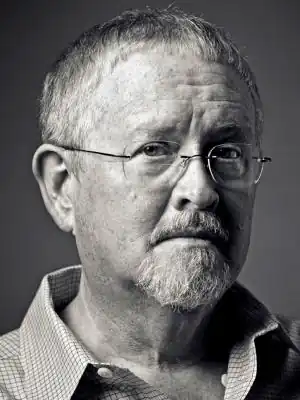
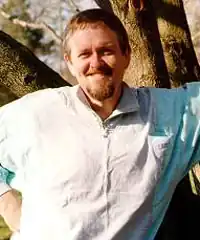

День народження: 24.08.1951 року
Кард – професор кафедри англійської мови в Університеті Північної Вірджинії (Southern Virginia University). Будучи нащадком Бригама Янга (Brigham Young), Кард є практикуючим членом Церкви Ісуса Христа Святих останніх днів (LDS Church). Крім великого обсягу художніх творів, Кард відомий як публіцист і коментатор. Його погляди на гомосексуальність, в тому числі неприйнятність одностатевих шлюбів, часто піддаються критиці.
У серпні 2013-го Кард представив досить сміливий нарис, в якому описував один з варіантів недалекого майбутнього. В ньому президент Барак Обама править в диктаторському стилі Гітлера або Сталіна, використовуючи свої власні поліцейські сили, створені з молодих і безробітних городян. Крім того, Обама і його дружина вносять поправки до Конституції США, щоб дозволити президенту залишатися біля керма протягом усього життя, як у гітлерівській Німеччині. Кард працює в декількох жанрах, але найбільш відомий як автор наукової фантастики. Його роман ‘Гра Ендер' (‘Ender's Game') 1985-го і продовження ‘Голос тих, кого немає' (‘Speaker for the Dead') 1986-го виграли премії ‘Hugo' і ‘Nebula'. Випуск екранізації роману 1985-го намічений на 1 листопада 2013-го. Кард виступив одним з продюсерів картини. Орсон Скотт Кард, третій з шести дітей Уілларда (Willard) і Пеггі Кард (Peggy Card), народився 24 серпня 1951-го в Ричленде, штат Вашингтон (Richland, Washington). Він закінчив Університет Брігама Янга (Brigham Young University, BYU) і Університет штату Юта (University of Utah), а також пройшов річну програму підготовки до ступеня доктора філософії в Університеті Нотр-Дам (University of Notre Dame). Кард починав свою письменницьку кар'єру як поет, але з часом почав допрацьовувати чужі сценарії, адаптувати книги і писати власні одноактні і повноцінні п'єси, деякі з яких були поставлені в BYU. Він написав оповідання ‘Гра Ендер", коли працював у газеті BYU, а потім взявся за написання роману з однойменною назвою. Історія про вторгнення інопланетних ‘жукерів' (‘buggers') і талановитого хлопчика Эндере Виггине, єдиною надією на порятунок людства, отримала пряме продовження в романі ‘Голос тих, кого немає'. Величезний успіх космічних пригод Ендер вилився в цілу серію романів. У Орсона і його дружини Крістін (Kristine) народилося п'ятеро дітей, кожен з яких був названий на честь одного чи кількох письменників. Майк Джеффрі (Michael Geoffrey) – на честь ‘батька англійської поезії' Джеффрі Чосера (Geoffrey Chaucer). Емілі Дженіс (Emily Janice) – на честь Емілі Бронте (Emily Brontë) і Емілі Дікінсон (Emily Dickinson). Чарльз Бенджамін (Charles Benjamin) – на честь класика світової літератури Чарльза Діккенса (Charles Dickens). Зіна Маргарет (Zina Margaret) – на честь Маргарет Мітчелл (Margaret Mitchell). Ерін Луїза (Erin Louisa) – на честь Луїзи Мей Олкотт (Louisa May Alcott). Син Чарльз, який страждав від церебрального паралічу, помер незабаром після свого 17-го дня народження. Дочка Ерін померла на наступний день після свого народження. Непросте життя сина Чарльза вплинула на деякі твори Карда, в першу чергу, на серію ‘Воозобертання додому' (‘Homecoming') і збірник постапокаліптичних оповідань ‘Люди на краю пустелі' (‘Folk of the Fringe'). 1 січня 2011-го Кард переніс інсульт, і якийсь час провів у лікарні. Він повідомив, що збирається повністю оговтатися від удару, незважаючи на проблеми з рухливістю його лівої руки. У серпні 2013-го американський письменник представив доволі сміливий нарис, який сам назвав ‘експериментом в художній прозі'. У ньому Кард описує варіант недалекого майбутнього, де президент Барак Обама (Barack Obama) править в диктаторському стилі Гітлера (Hitler) або Сталіна (Stalin), використовуючи свої власні поліцейські сили, створені з молодих і безробітних городян. Обама і його дружина вносять поправки до Конституції США, щоб дозволити президенту залишатися біля керма протягом усього життя, як в Нігерії (Nigeria), Зімбабве (Zimbabwe) і гітлерівської Німеччини (Germany).